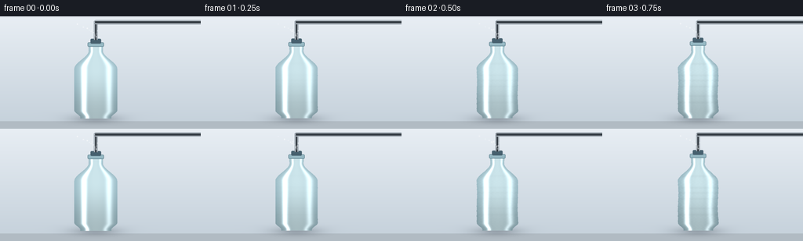
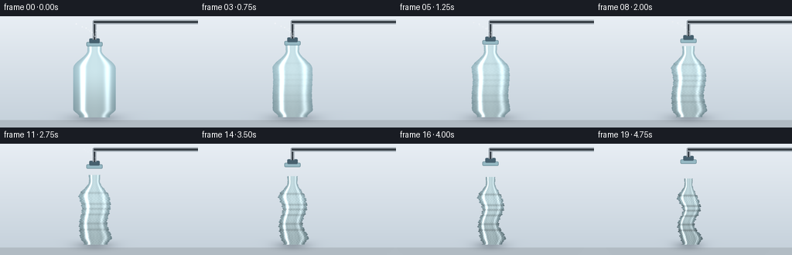

CODING AGENTS AS PIXEL WORLD MODELS
traex/Seed-2.1-Pro-0915 · phygen_016
点击播放 · 原生 RGB 像素
逐轮保存的候选
回放视频、检查图与代码变化。
每份候选均可单独播放。实际图片检查记录在下方工具轨迹中。
候选 01播放与检查图
点击播放 · 原生 RGB 像素


展开代码变化
--- 上一保存版本 +++ 本次保存版本 @@ -0,0 +1,193 @@ +"""Procedural t2v render: air extracted from a sealed thin plastic bottle. + +Renders 20 RGB frames (256x144 @ 4fps) showing a PET bottle progressively +crumpling inward as a vacuum pulls air through a tube at its mouth. +Pure numpy/PIL, supersampled then downscaled. +""" +import numpy as np +from PIL import Image, ImageDraw, ImageFilter + +import artifact_io + +SS = 3 # supersampling factor +W, H = 256, 144 +RW, RH = W * SS, H * SS +N = 20 + +# Bottle geometry anchors in render coordinates (y grows downward). +BASE_Y = 388.0 # bottom of bottle +BODY_TOP = 200.0 # where shoulder begins +NECK_Y = 132.0 +BODY_HW = 82.0 # body half width +NECK_HW = 27.0 +CX = RW * 0.5 - 18.0 # bottle center, shifted left to leave room for tube + + +def smoothstep(a, b, x): + u = np.clip((x - a) / (b - a), 0.0, 1.0) + return u * u * (3 - 2 * u) + + +def base_halfwidth(y): + """Undeformed half-width profile as a function of row y.""" + hw = np.full_like(y, BODY_HW, dtype=float) + # Rounded bottom corners. + bottom = smoothstep(BASE_Y - 26, BASE_Y, y) + hw = hw * (1.0 - 0.28 * bottom) + # Shoulder taper into the neck. + shoulder = smoothstep(BODY_TOP, NECK_Y, y) + hw = hw * (1 - shoulder) + NECK_HW * shoulder + # Neck. + neck = y < NECK_Y + hw[neck] = NECK_HW + (NECK_Y - y[neck]) * 0.06 + return hw + + +def dent_fields(y, t): + """Asymmetric inward dent amplitudes (0..~0.5) along left/right sides.""" + c = t ** 1.25 + # Several localized dents at different heights. + centers_l = [330, 268, 225] + centers_r = [305, 245, 180] + d_l = np.zeros_like(y) + d_r = np.zeros_like(y) + for i, cy in enumerate(centers_l): + d_l += 0.30 * np.exp(-((y - cy) ** 2) / (2 * 34.0 ** 2)) * (0.7 + 0.3 * np.sin(i * 2.1)) + for i, cy in enumerate(centers_r): + d_r += 0.30 * np.exp(-((y - cy) ** 2) / (2 * 30.0 ** 2)) * (0.7 + 0.3 * np.cos(i * 1.7)) + # Fine vertical ripple that breaks the silhouette into crumples. + ripple = 0.05 * np.sin(y * 0.31 + 1.3) + 0.035 * np.sin(y * 0.67) + return c * (d_l + ripple), c * (d_r - ripple), c + + +def render_frame(frame_idx): + t = frame_idx / (N - 1) + c = t ** 1.25 # collapse progress, eased + yy, xx = np.mgrid[0:RH, 0:RW].astype(float) + + # Vertical squat under vacuum. + squash = 1.0 - 0.10 * c + y_shift = BASE_Y * (1 - squash) + yb = (yy - y_shift) / squash # query coordinate in undeformed space + + hw0 = base_halfwidth(yb) + d_l, d_r, cdent = dent_fields(yb, t) + width_scale = 1.0 - 0.42 * c # overall narrowing + hw_l = hw0 * width_scale * (1 - np.clip(d_l, 0, 0.8)) + hw_r = hw0 * width_scale * (1 - np.clip(d_r, 0, 0.8)) + + # Slight sideways buckling of the whole body, growing with collapse. + sway = 10.0 * c * np.sin((yb - BODY_TOP) * 0.045) + sway *= smoothstep(NECK_Y, BODY_TOP + 40, yb) + center = CX + sway + + inside = (xx >= center - hw_l) & (xx <= center + hw_r) & (yb <= BASE_Y + 4) & (yb >= NECK_Y - 26) + + # ---- shading ------------------------------------------------------- + nx = np.where(hw_l + hw_r > 0, + (xx - center) / np.maximum(hw_l + hw_r, 1e-3) * 2.0, 0.0) + edge = np.clip(np.abs(nx), 0, 1) + + # Translucent PET base: pale cool blue, darker toward rims. + base = np.array([205, 230, 236], dtype=float) + rim = np.array([120, 158, 172], dtype=float) + shade = base[None, None, :] * (1 - 0.55 * edge ** 2)[..., None] \ + + rim[None, None, :] * (0.55 * edge ** 2)[..., None] + + # Vertical light falloff, slightly darker near the base. + vgrad = 1.0 - 0.18 * smoothstep(BODY_TOP, BASE_Y, yb) + shade *= vgrad[..., None] + + # Specular stripes. + hl1 = np.exp(-((nx + 0.55) ** 2) / 0.012) * 0.55 + hl2 = np.exp(-((nx - 0.62) ** 2) / 0.02) * 0.25 + shade += (hl1 + hl2)[..., None] * np.array([255, 255, 255]) + + # Crumpling: wrinkle shading grows with collapse, strongest near sides. + wr_phase = np.sin(yb * 0.22) * 2.0 + nx * 14.0 + wrinkles = np.sin(wr_phase + np.sin(yb * 0.51) * 1.5) + wr_strength = cdent * (0.10 + 0.30 * edge ** 1.5) + shade *= (1.0 - wr_strength * np.abs(wrinkles))[..., None] + + # Horizontal crease bands at dent heights. + crease = np.zeros_like(yb) + for cy in (330, 305, 268, 245, 225, 180): + crease += np.exp(-((yb - cy) ** 2) / (2 * 3.2 ** 2)) + shade *= (1.0 - 0.22 * cdent * np.clip(crease, 0, 1.5))[..., None] + + shade = np.clip(shade, 0, 255) + + # ---- background ---------------------------------------------------- + bg_top = np.array([232, 238, 244]) + bg_bot = np.array([196, 208, 218]) + bg = bg_top[None, None, :] * (1 - yy / RH)[..., None] \ + + bg_bot[None, None, :] * (yy / RH)[..., None] + # Tabletop band. + table = yy > BASE_Y + 14 + bg[table] = np.array([178, 188, 196]) + img = bg + + # Soft contact shadow, shrinking as the bottle caves in. + shadow_w = (hw0 * width_scale * 1.55) + shadow = np.exp(-((xx - CX) / np.maximum(shadow_w, 1)) ** 2) \ + * np.exp(-((yy - BASE_Y - 6) / 16.0) ** 2) * 0.35 + img = img * (1 - shadow[..., None]) + np.array([60, 70, 80]) * shadow[..., None] + + img = np.where(inside[..., None], shade, img) + + pil = Image.fromarray(img.astype(np.uint8), "RGB") + draw = ImageDraw.Draw(pil, "RGBA") + + # ---- neck, cap and suction tube ------------------------------------ + neck_top = NECK_Y - 26 - y_shift + neck_cx = CX + # Neck ring. + draw.rounded_rectangle([neck_cx - NECK_HW - 4, neck_top - 6, + neck_cx + NECK_HW + 4, neck_top + 10], + radius=4, fill=(150, 185, 196, 255), + outline=(95, 130, 142, 255), width=2) + # Cap / collar where the extraction tube enters. + cap_h = 16 + draw.rounded_rectangle([neck_cx - 20, neck_top - cap_h - 4, + neck_cx + 20, neck_top - 2], + radius=4, fill=(70, 96, 110, 255)) + tube_x0, tube_x1 = neck_cx - 7, neck_cx + 7 + tube_top = 18.0 + draw.rectangle([tube_x0, tube_top, tube_x1, neck_top - cap_h], + fill=(214, 222, 228, 255), outline=(140, 152, 162, 255), width=2) + # Tube bore (dark inner channel). + draw.rectangle([neck_cx - 3, tube_top, neck_cx + 3, neck_top - cap_h], + fill=(52, 60, 68, 255)) + # Tube bends right and exits frame. + draw.rounded_rectangle([neck_cx - 7, tube_top - 4, RW + 10, tube_top + 12], + radius=8, fill=(214, 222, 228, 255), + outline=(140, 152, 162, 255), width=2) + draw.rectangle([neck_cx - 3, tube_top, RW, tube_top + 8], fill=(52, 60, 68, 255)) + + # ---- airflow streaks being pulled into the mouth ------------------- + # Fade as the bottle empties; animated dots move toward the tube. + flow_alpha = max(0.0, 0.85 - t * 1.05) + if flow_alpha > 0.02: + for k in range(4): + phase = (frame_idx * 0.35 + k * 0.27) % 1.0 + sx = neck_cx - 70 + k * 26 + for seg in range(3): + u = (phase + seg * 0.33) % 1.0 + px = sx + (neck_cx - sx) * u + py = neck_top - cap_h - 26 - 34 * (1 - u) + k * 7 + a = int(170 * flow_alpha * (1 - 0.3 * seg)) + draw.ellipse([px - 2.2, py - 2.2, px + 2.2, py + 2.2], + fill=(255, 255, 255, a)) + + pil = pil.filter(ImageFilter.GaussianBlur(radius=0.6)) + small = pil.resize((W, H), Image.Resampling.LANCZOS) + return np.asarray(small, dtype=np.uint8) + + +def main(): + frames = [render_frame(i) for i in range(N)] + artifact_io.save(frames, ".") + + +if __name__ == "__main__": + main()
候选 02播放与检查图
点击播放 · 原生 RGB 像素
展开代码变化
--- 上一保存版本
+++ 本次保存版本
@@ -56,7 +56,7 @@
for i, cy in enumerate(centers_r):
d_r += 0.30 * np.exp(-((y - cy) ** 2) / (2 * 30.0 ** 2)) * (0.7 + 0.3 * np.cos(i * 1.7))
# Fine vertical ripple that breaks the silhouette into crumples.
- ripple = 0.05 * np.sin(y * 0.31 + 1.3) + 0.035 * np.sin(y * 0.67)
+ ripple = 0.035 * np.sin(y * 0.24 + 1.3) + 0.02 * np.sin(y * 0.52)
return c * (d_l + ripple), c * (d_r - ripple), c
@@ -65,14 +65,20 @@
c = t ** 1.25 # collapse progress, eased
yy, xx = np.mgrid[0:RH, 0:RW].astype(float)
- # Vertical squat under vacuum.
- squash = 1.0 - 0.10 * c
- y_shift = BASE_Y * (1 - squash)
- yb = (yy - y_shift) / squash # query coordinate in undeformed space
+ # Vertical compression anchored at the base, blended out toward the neck
+ # so the mouth stays attached to the fixed cap and suction tube.
+ comp = 0.08 * c
+ squash = 1.0 - comp
+ yb_base = BASE_Y - (BASE_Y - yy) / squash
+ blend = smoothstep(NECK_Y, BODY_TOP + 20, yy)
+ yb = yy * (1 - blend) + yb_base * blend
hw0 = base_halfwidth(yb)
d_l, d_r, cdent = dent_fields(yb, t)
width_scale = 1.0 - 0.42 * c # overall narrowing
+ # The rigid neck keeps its width; narrowing applies below the shoulder.
+ neck_blend = smoothstep(NECK_Y, BODY_TOP, yb)
+ width_scale = 1.0 + (width_scale - 1.0) * neck_blend
hw_l = hw0 * width_scale * (1 - np.clip(d_l, 0, 0.8))
hw_r = hw0 * width_scale * (1 - np.clip(d_r, 0, 0.8))
@@ -139,7 +145,7 @@
draw = ImageDraw.Draw(pil, "RGBA")
# ---- neck, cap and suction tube ------------------------------------
- neck_top = NECK_Y - 26 - y_shift
+ neck_top = NECK_Y - 26
neck_cx = CX
# Neck ring.
draw.rounded_rectangle([neck_cx - NECK_HW - 4, neck_top - 6,
候选 03播放与检查图
可观测工具轨迹
实际执行的命令与返回图片。
命令 1exit 0
/bin/bash -lc 'cat prompt.txt GENERATION_RULES.json 2>/dev/null; ls'
命令 2exit 0
/bin/bash -lc 'cat task_spec.json 2>/dev/null; cat GENERATION_RULES.md 2>/dev/null'
命令 3exit 0
/bin/bash -lc 'cat artifact_io.py'
命令 4exit 0
/bin/bash -lc 'cd . && python generate.py && ls'
命令 5exit 0
/bin/bash -lc 'cd . && python generate.py 2>/dev/null && echo done'
视觉工具实际返回图片 1

视觉工具实际返回图片 2

保存候选 3 份；完成命令 5 次；可验证图片返回 2 张。原始 API 响应与完整日志保留在本地。